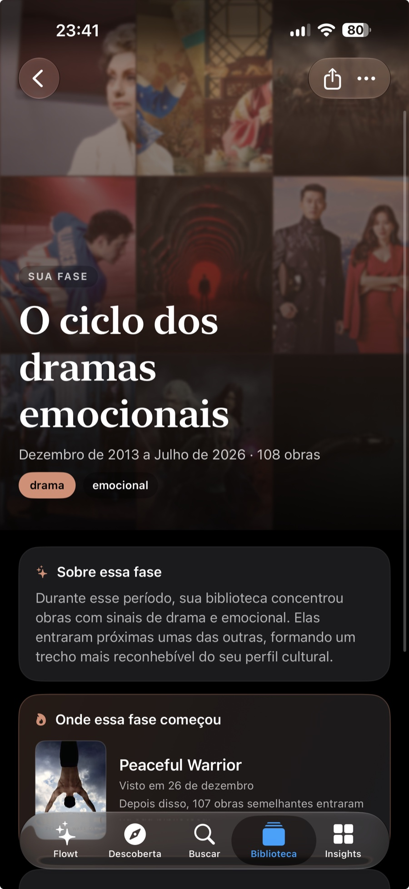
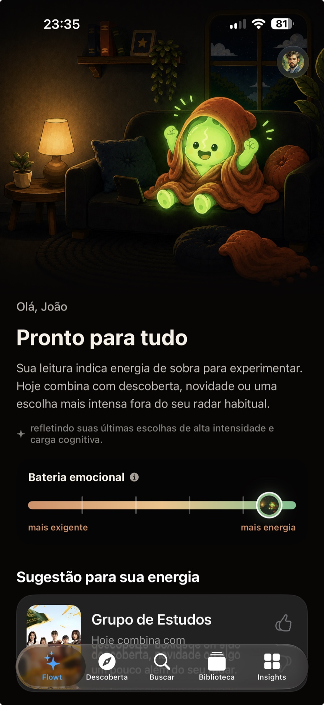
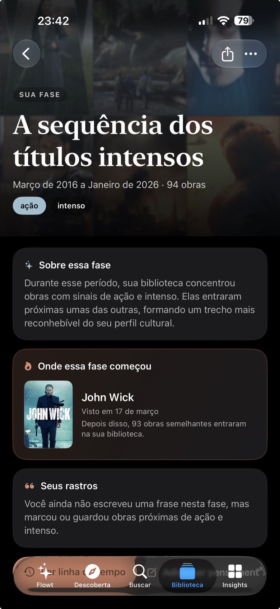
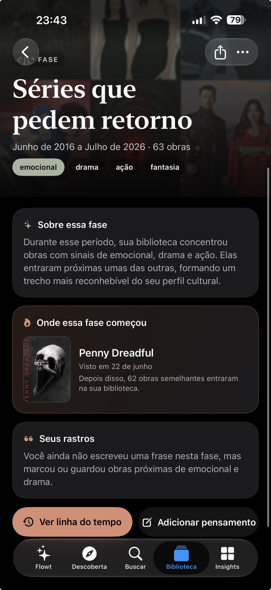
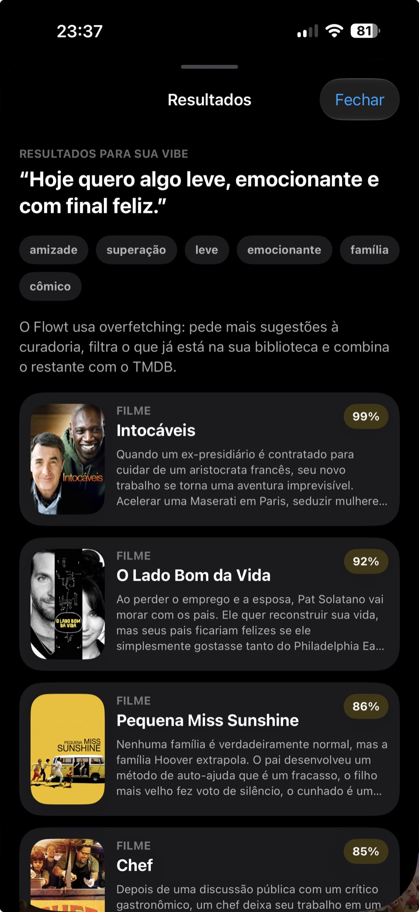
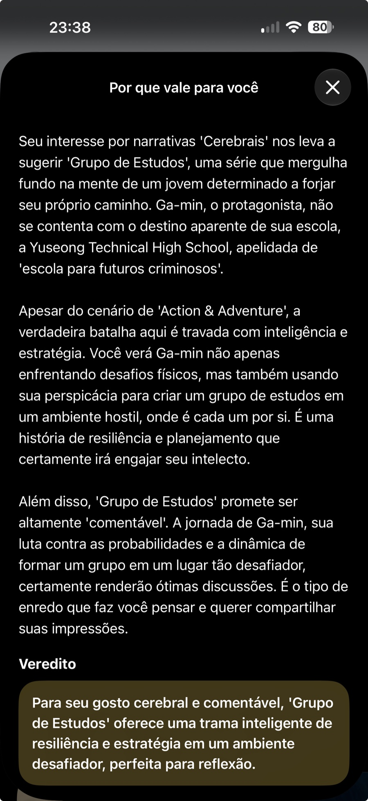
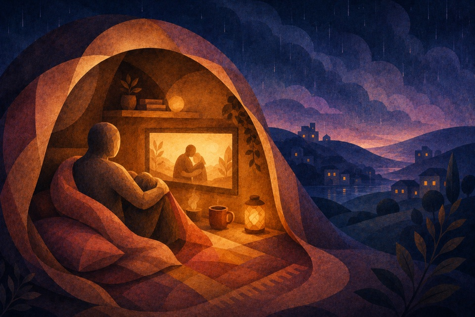
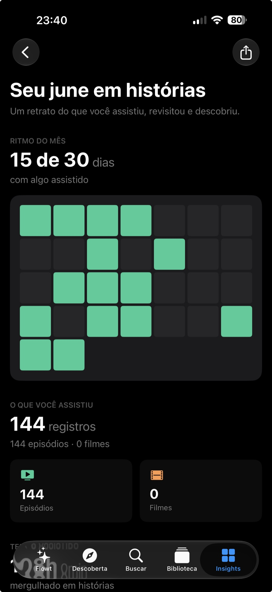

Feito para quem assiste de verdade.
Memórias, recomendações e insights construídos a partir do seu jeito de assistir.
O Flowt transforma o que você assiste em fases, entende o seu ritmo e ajuda a encontrar o que combina com cada momento.
Em breve naApp Store

Histórias deixam rastros
Não é só o que você vê. É o que fica.
O Flowt transforma o seu histórico em uma narrativa sobre fases, afetos e descobertas.
Memórias
Listas guardam títulos. Flowt guarda fases.
Cada obra encontra um lugar no período da sua vida em que ela realmente importou.


Seu histórico deixa de ser uma planilha e passa a ter contexto.
Personalização que você entende
O algoritmo não é uma caixa-preta. É um espelho.
01
Comece pelo que quer sentir.
Descreva a vibe — leve, inquietante, bonita ou estranha. O Flowt encontra histórias para o seu momento, não para uma categoria.
“Algo bonito para desacelerar.”

02
Saiba por que combina.
Vibe, histórico, ritmo e preferências aparecem na recomendação. Você vê os sinais e continua no controle.
- Seu momento40%
- Seu histórico35%
- Seu ritmo25%

Um algoritmo com cuidado
Seu ritmo muda. O Flowt acompanha.
O Flowt não tenta adivinhar seu humor. Ele compara o seu momento com o seu próprio histórico para recomendar com contexto — não para prender sua atenção.
01
Conheça Ray, sua companhia no Flowt.
Ele transforma sinais complexos em uma leitura simples, sempre por perto e sem julgamentos.
02
O seu normal é a referência.
Intensidade, frequência, maratonas, novidade e o tempo desde o último check-in ajudam o Flowt a entender seu ritmo cultural.
03
Nem todo momento pede outra descoberta.
Às vezes o melhor é continuar algo familiar, escolher uma história curta, guardar para depois — ou simplesmente fazer uma pausa.
O objetivo não é aumentar o tempo de tela. É tornar cada escolha mais adequada ao momento.
Seu perfil de espectador
Não é um rótulo. É uma perspectiva.
O Flowt reconhece padrões no longo prazo e devolve uma leitura viva do seu repertório.

Progresso com perspectiva
Seu mês não é uma contagem. É um retrato.
Veja o que marcou o período, como o seu ritmo mudou e quais histórias ficaram.

14histórias
03fases
Dê mais sentido ao que você assiste.
Leve suas histórias, fases e descobertas com você — e encontre o que combina com cada momento.
Em breve naApp Store